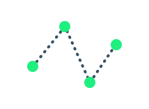

The Spline node provides an arbitrary piecewise-linear envelope. That is, it connects some points with lines to make a function. The node's input takes the x-coordinate and output provides the y-coordinate.
Among the Spline node's uses are pitch envelopes, amplitude envelopes, oscillator waveforms, velocity curves, and automation control.
The value boxes on the left control the min and max value of the function. Control for the scale of the x-axis will be added in a future version.
The red dot shows the current input and output values.